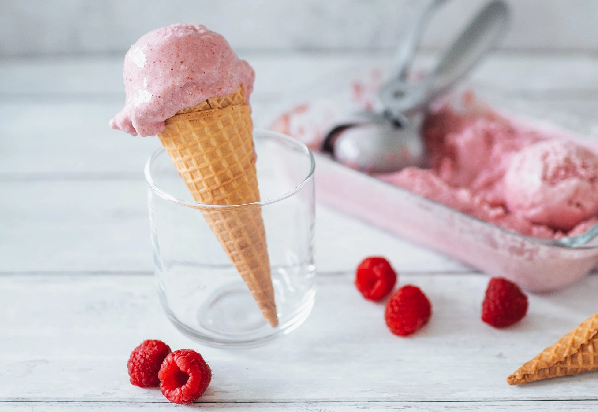

A delicious and refreshing homemade raspberry yogurt ice cream recipe. Made with just a few simple ingredients, this creamy treat is perfect for summer!
Ingredients
- 2 cups frozen raspberries
- 2 cups Greek yogurt
- 1/2 cup honey
- 1 teaspoon vanilla extract
Instructions
- In a blender, combine frozen raspberries, Greek yogurt, honey, and vanilla extract.
- Blend until smooth and creamy.
- Pour the mixture into a loaf pan lined with parchment paper.
- Smooth the top with a spatula.
- Place the loaf pan in the freezer and freeze for at least 4 hours or until firm.
- Serve the raspberry yogurt ice cream in bowls and enjoy!